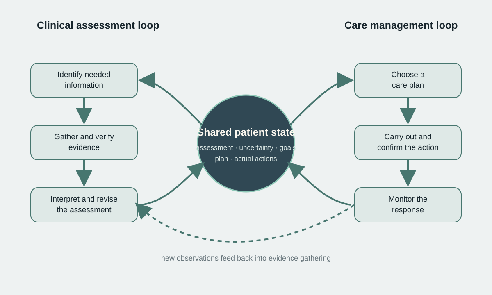

The more I thought about a common loop in medicine, the less complete “collect information, analyze it, make a diagnosis” seemed. Care continues after a diagnosis.
Treatment produces new observations, and those observations may change both our understanding and our next action.
I now picture two interacting loops, roughly like a figure eight.
One loop updates our understanding of the patient. The other selects, implements, and adjusts care. I use clinical assessment rather than only diagnosis because evaluation continues throughout treatment: we keep assessing disease control, treatment response, and new problems.
Two loops around the same patient
| Dimension | Clinical assessment loop | Care management loop |
|---|---|---|
| Main question | What is happening, and what remains uncertain? | What should happen next? |
| Recurring work | Gather evidence, interpret it, update the assessment, and identify missing information | Choose a plan, carry it out, monitor the response, and adjust |
| Main output | A working assessment with supporting evidence and uncertainty | A care plan, a record of actual actions, and follow-up observations |
| What drives another iteration | Missing, conflicting, or unexpected evidence | A change in the patient’s condition, goals, response, or ability to follow the plan |
Cook and colleagues’ distinction between diagnostic reasoning and management reasoning provides a useful basis for this view. Choosing and adjusting a management plan requires reasoning about patient goals, practical constraints, and evolving information.1

Assessment guides action. The chosen action determines what we need to monitor. The response then informs the next assessment and management decision. These interactions can happen repeatedly within a visit or across weeks of follow-up.
Where patient-facing AI might help
This helps clarify what I want to explore in patient-facing AI. I am especially interested in the time between visits. An AI system could track pending results, gather missing information, check whether a plan was actually followed, and help arrange reassessment when something changes. It would need to connect these judgments to services the patient can actually access.
I would analyze this work by function—assessment, decision-making, and execution—and ask where AI can help the people carrying out each part.
What a feedback loop needs to remember
For this to work, the system must keep three things separate.
| Record | What it captures | Why it matters |
|---|---|---|
| Recommended action | What the patient and care team planned to do | Preserves the intention behind the plan |
| Executed action | What actually happened, when, and with what obstacles | Establishes whether and how the plan was carried out |
| Observed response | What changed afterward, including symptoms and test results | Supplies evidence for reassessment and adjustment |
If a patient does not improve, knowing the recommendation alone is insufficient. We also need to know whether it was carried out before interpreting the result.
Existing research makes this direction worth pursuing. AMIE has studied disease management across multiple simulated visits.2 In a small trial involving 32 patients, a voice-based system used clinician-selected dosing rules and patient reports to support insulin adjustment, reaching the study-defined optimal dose sooner.3 These are different forms of evidence: simulated management reasoning in the first case, and a narrow, rules-based feedback loop in real care in the second.
The next questions are concrete
I am particularly interested in patients who struggle to get timely clinical attention. I would judge this idea by whether connecting the two loops helps them receive appropriate care sooner, with fewer missed problems, delays, and unnecessary interventions.
References
- Cook DA, Sherbino J, Durning SJ. Management Reasoning: Beyond the Diagnosis. JAMA. 2018;319:2267–2268.
- Liévin V, et al. Towards conversational artificial intelligence for disease management. Nature. 2026;655:1292–1299.
- Nayak A, et al. Use of Voice-Based Conversational Artificial Intelligence for Basal Insulin Prescription Management Among Patients With Type 2 Diabetes: A Randomized Clinical Trial. JAMA Network Open. 2023;6:e2340232.